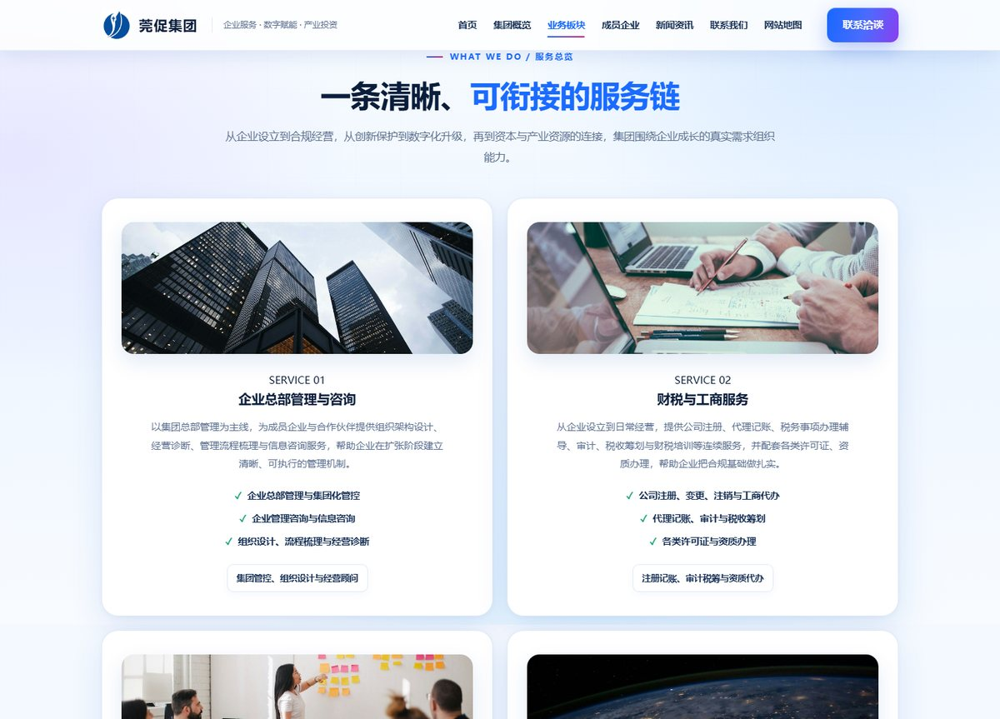
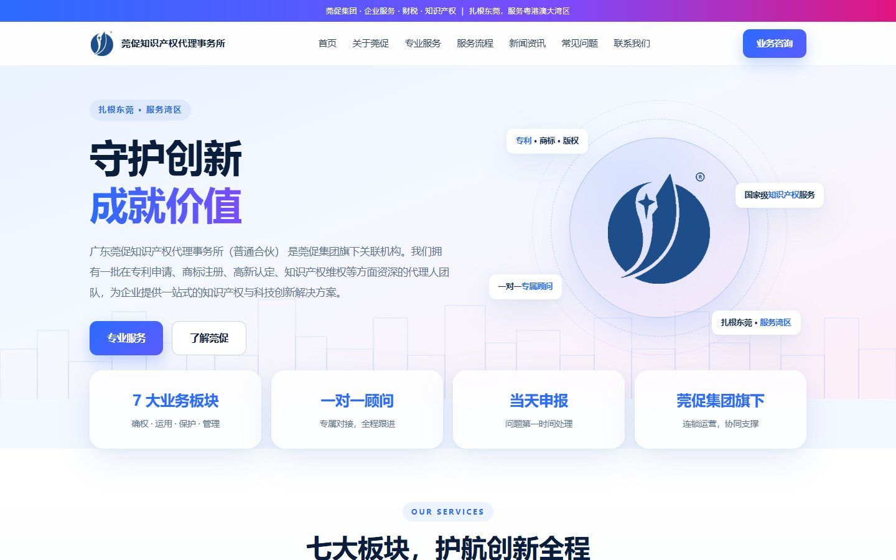
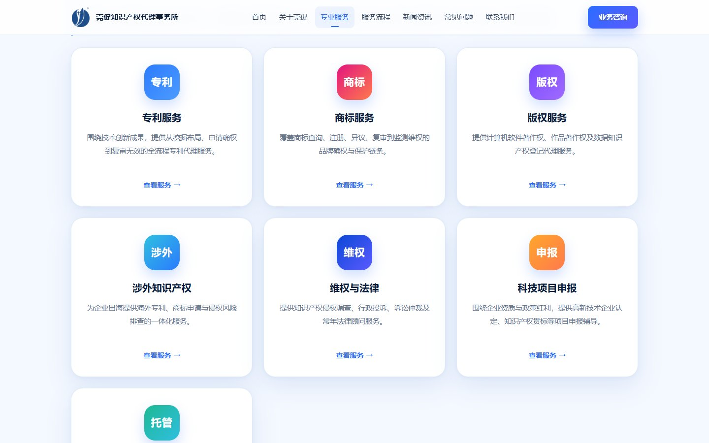
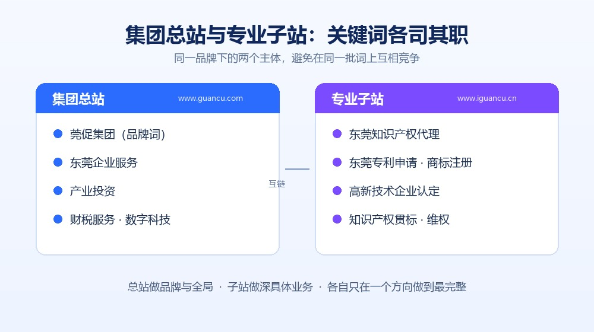
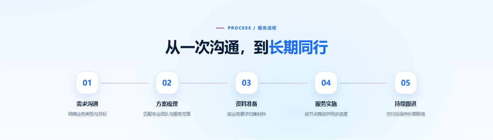

数字经济向纵深推进的背景下，企业服务的数字化转型已不再停留于“建一个网站”，而是走向多主体协同、业务链条完整呈现与搜索可见性并重的新阶段。莞促集团官网 www.guancu.com 的改版上线，以及旗下莞促知识产权官网 www.iguancu.cn 的板块化建设，提供了一个可观察的样本：集团总站与专业子站如何在数字经济格局中各自定位，又如何共同服务于企业数字化转型升级的实际需求。
数字底座：集团官网改版整合业务全貌
2026 年 11 月 13 日，莞促集团官网 www.guancu.com 改版上线。集团概览、业务板块、成员企业、新闻资讯与联系方式被整理到统一入口，扎根东莞近二十年的业务脉络、六大业务板块和 19 家成员与投资企业得到系统呈现。
集团成立于 2017 年 10 月，业务根基可追溯至 2006 年成立的企业事务代理机构，从工商注册、代理记账与财税咨询起步，逐步延伸至审计与税收筹划、知识产权与科技项目申报、数字科技与大数据服务、产业投资与园区运营、教育与文旅、新能源投资建设等领域。六大板块分别由专业成员企业承接，从企业设立到合规经营，从创新保护到数字化升级，再到资本与产业资源的连接，形成覆盖企业成长全程的服务链条。

垂直深耕：专业子站串联七类知产服务
作为集团旗下关联机构，广东莞促知识产权代理事务所（普通合伙）的官网 www.iguancu.cn 把业务拆成专利、商标、版权、涉外、维权、科技项目申报、知产运营与托管七大板块。事务所在集团管理下实行连锁运营，下设 8 家分公司及 1 家自主产权科技孵化器，面向湾区企业提供从确权、运用到保护、管理的一站式知识产权服务。

七大板块覆盖确权、运用、保护与管理的完整链条：专利服务围绕技术创新成果提供挖掘布局、申请确权到复审无效的全流程代理；商标服务覆盖查询、注册、异议、复审到监测维权；版权服务提供软件著作权、作品著作权及数据知识产权登记代理；涉外知识产权为企业出海提供海外专利、商标申请与侵权风险排查；维权与法律提供侵权调查、行政投诉、诉讼仲裁及常年法律顾问服务；科技项目申报围绕高新技术企业认定、知识产权贯标等项目提供辅导；知产运营与托管则覆盖资产管理、许可转让、质押融资与托管运营。

协同逻辑：多主体网站的关键词分工与关系呈现
集团化运营中，母公司与专业子公司各自建站已很常见。两个站点同属一个品牌、共享部分业务表述，若被搜索引擎判断为内容高度相似，容易出现互相分流、关键词内耗。两个站点的建设过程提供了可对照的思路：品牌大词归总站，垂直业务词归专业站。

集团总站 www.guancu.com 聚焦品牌与大范围业务词，标题与描述围绕集团名称、东莞企业服务、产业投资、财税服务、数字科技展开，承担品牌背书与集团全貌展示的角色；专业子站 www.iguancu.cn 则完全转向知识产权垂直词，主打东莞知识产权代理、东莞专利申请、东莞商标注册、高新技术企业认定、知识产权贯标等具体服务词。这些词在集团站上只做概括提及，在子站上则有独立的服务详情页、流程说明与知识文章支撑，搜索意图与页面内容高度匹配。
关键词错开之后，还需要用技术信号说明两站关系。结构化数据中的 parentOrganization 字段指向集团官网，明确专业站是集团旗下的机构，而非集团站的镜像或复制品；规范链接、站点名称与分享信息统一使用子站品牌，避免身份混淆。互链方面，子站全站页脚保留指向集团官网的友情链接，正文的集团介绍页面也提供直达入口，把信任信号传递给总站。两站使用普通链接互链即可，真正要避免的是把两站做成内容雷同的复制站点。

转型启示：把分散信息整理成可查可问的入口
服务流程被拆成需求沟通、专业诊断、方案确认、服务实施、交付跟进五个节点，交付之后仍保持沟通与跟进。对湾区企业而言，这类专业机构的意义在于把分散的资质、流程与政策信息整理成可查可问的入口，便于在确权、保护与运用之间做出选择。
关键词
数字经济数字化转型升级企业服务莞促集团莞促知产集团官网改版多主体网站搜索引擎优化知识产权服务两个主体网址：www.guancu.comwww.iguancu.cn